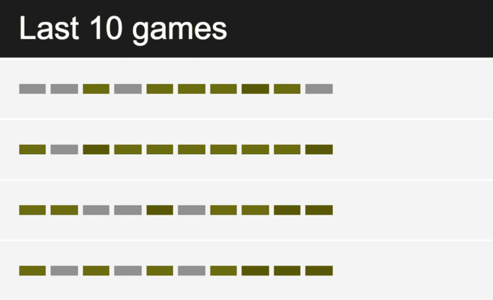
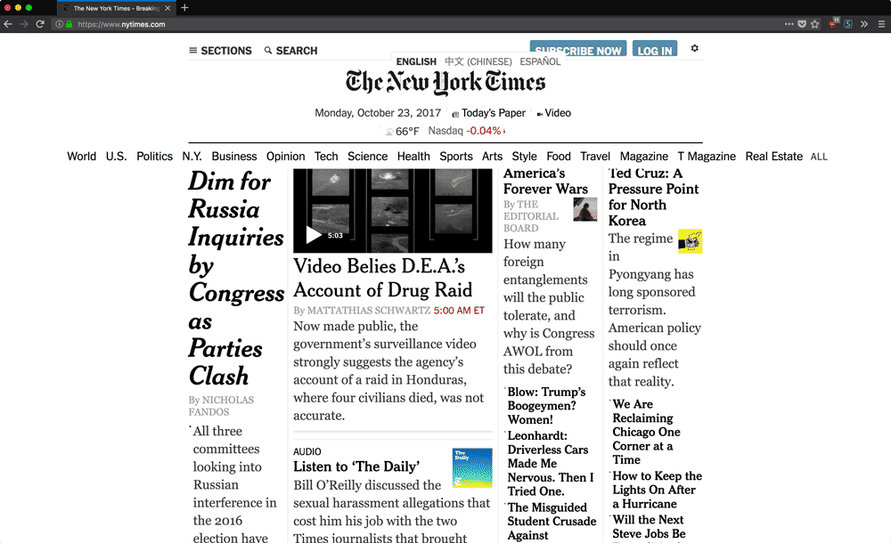
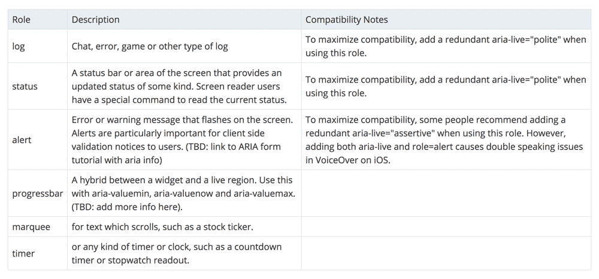

Accessibility for Everyone
The web rules
The web is special. It’s incredible. Remember how things used to be?
The web has everything we know on it, and you can read it all. Nothing’s stopping you. Maybe the fact that that still blows my mind marks me as an old fogey, but honestly, how can that not blow your mind?
—@seldo, npm CTO
Something is stopping people.
Accessibility shouldn’t be a special effort
HTML is (generally) accessible by default.
Don’t put up barriers by “improving” your product.
Accessibility is just a part of UX.
Not designing for specific disabilities but for a diverse set of use-cases.
Good design is inclusive
Accessibility is for everyone
It benefits more people than you might think.
Permanent impairment
- 10m people in the UK are disabled (~17% of the population)
- Half are over state pension age
- 4.5% of the population are colour-blind (9% of men)
Temporary or situational impairment
Everyone benefits from good accessible design.
High contrast
user with poor vision
or
me reading my phone in bright sunlight 😎
Captioned videos
deaf user
or
me when I forget my headphones at work 🎧
One-handed navigation
user with one arm
or
me drinking a beer 🍺
Don’t make assumptions
Not all users are like you or your teammates
Not everyone always has great eyesight.
Not everyone always has a powerful modern device.
Not everyone always chooses the browser they use.
Design for everyone.
User personas
Colour-blind
May struggle to perceive the difference between certain colours.
- Do note rely solely on colour
- Allow customisation/colour-blind mode

Low-vision
May need to increase the text-size in my browser.
- Do not prevent zoom
- Scale UI based on font-size

Low-vision
May need to use a screen-magnifier.
- Show things in context
- Logical content flow
Blind
Need to use a screenreader.
- Information isn’t solely visual
- Programmatic access to structured content
Hard-of-hearing
May struggle to hear things.
- Provide text alternatives to audio content
- Transcripts and/or subtitles
Deaf
Cannot hear anything. Sign language may be first language
- Subtitles can be hard to follow, may prefer signed content
- Option for non-phone communication
Mild motor-impairment
May struggle to use a mouse or touchscreen with fine control.
- Large interactive targets
- Lots of padding for links/buttons
Medium motor-impairment
Have to use a keyboard instead of a mouse.
- DON’T DISABLE FOCUS OUTLINES
- Logical document flow so focus doesn’t jump around
- Ensure custom UI works without a mouse
Severe motor-impairment
Uses voice-input instead of a mouse or keyboard.
- Test interface with speech-recognition software
- Logical labels as they have to describe UI elements
Dyslexia
May struggle to process written text or spell.
- Don’t require exact spelling
- Write content in simple English
- Clear subheadings to divide content
Autism
May struggle to process information.
- Clear, descriptive interface
- Avoid idioms or figures of speech
- Maybe prefer plain language and simple colours
ADHD
May find it hard to concentrate.
- Don’t distract the user!
- No popups or alerts during important tasks
Memory
May struggle to remember previous information or get easily confused.
- Don’t require memorising info from previous steps
- Avoid time-limits for task-completion
How do we design accessibly?
WCAG
The Web Content Accessibility Guidelines are a set of best practices.
To meet guidelines sites should be:
- Perceivable
- Operable
- Understandable
- Robust
Cheatsheet
The guidelines can be quite dry, so here’s a cheatsheet:
bitsofco.de/the-accessibility-cheatsheet
Perceivable
Can all users perceive your UI?
e.g. text with sufficient size/contrast/line-height, images with alt-text, alerting screenreaders to dynamic content.
Operable
Can all users operate the UI components and navigation?
e.g. ensure keyboard functionality, no unnecessary time-limits, descriptive link text, hierarchical headings, unique & descriptive page titles.
Operable
Can all your users understand the content and how to use the interface?
e.g. use plain English, set the lang attribute, label inputs, provide error messages in context.
Robust
Can your content be understood by different user-agents/assistive tech?
e.g. semantic HTML (and ARIA when this fails you), automated and manual testing.
WAI-ARIA
Stands for Web Accessibility Initiative – Accessible Rich Internet Applications…
A spec for assigning meaning to otherwise meaningless chunks of markup.
ARIA gives divs superpowers
Useful where functionality is added with JS, when you’re beyond semantic HTML.
Turn div-soup into something a screenreader can understand.
Labels
Visually obvious content might need a text label.
e.g. <button aria-label="menu button">☰</button>
Roles
Signifies your custom component as a type assistive tech can recognise.
e.g. a custom <select> using divs could use role="listbox".
Live regions
Ensures dynamically updated content is read out.
aria-live="polite" will be read once the current info finished, aria-live="assertive" will interrupt.
